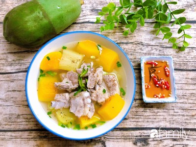

|  |
Food's name: Papaya rib soup▸ Ingredients:
▸ Time to prepare: 45 minutes ▸ Approx quantity: 1 large bowl |
▸ Detailed recipe:
- Papaya peeled, washed, cut into bite-sized pieces.
- Soak peanuts in water for 30 minutes.
- Put all the above ingredients in a pot, bring to a boil over high heat with enough water.
- When the water boils, switch to simmer.
- Taste the seasoning to taste and then turn off the stove.
▸ Calories and related information: